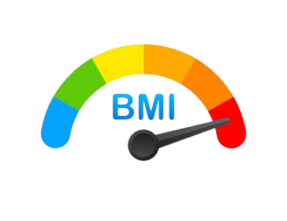
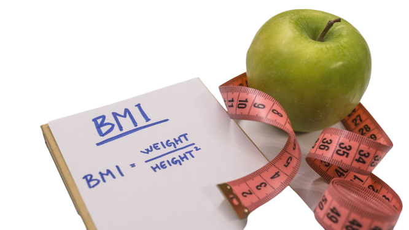
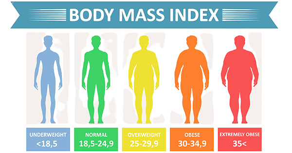

𝓑𝓮 𝓗𝓮𝓪𝓵𝓽𝓱𝔂
is a web site specialized in
calculating the Body Mass Index
of humain beings.

Body Mass Index (BMI) is a person's weight
in kilograms (or pounds)
divided by the square of height in meters (or feet).
A high BMI can indicate high body fatness.
BMI screens for weight categories that may lead to health problems,
but it does not diagnose the body fatness or health of an individual.

Body Mass Index (BMI) is a person's weight
in kilograms (or pounds)
divided by the square of height in meters (or feet).
A high BMI can indicate high body fatness.
BMI screens for weight categories that may lead to health problems,
but it does not diagnose the body fatness or health of an individual.

Discover More